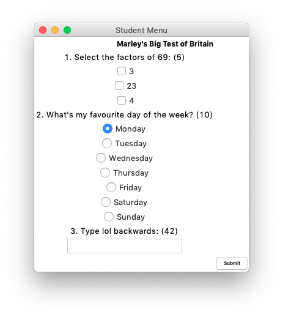
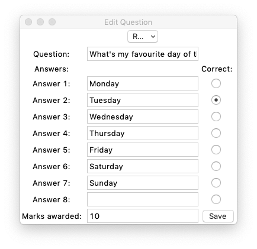

Marley Sudbury
Test System
At university we had a team-based coursework. This was to create a system which allows lecturers to create tests which students can then take. To do this we used the Tkinter library for Python. This was quite a long and challenging coursework, and although the final product could do with some polish, it met enough criteria for us to pass. I also feel that I should point out the bits I wrote got full marks.
This is what it looks like when you are taking a test. Quite rough, like I said. This part was not my responsibility, but it makes the rest easier to understand.

This was one of the windows I made in the program. The option for summative or formative is to do with if it is contributing to a grade or not. I think most of the buttons are quite self-explanatory.
This is the menu which appears when you add a new question or edit a previously added question. The form controls present on the screen change depending on the question type selected at the top (I'm not sure why the text at the top is cropped; this only happens on Mac as far as I can tell).
I can't make the source code available here because I only wrote some of it, but I assure you it is ugly enough that looking at it would give you nightmares anyway.
Of course, the point of this project was not necessarily the end product. Rather the focus was on the journey, the team dynamics, and the process of designing a system to meet a client's requirements.